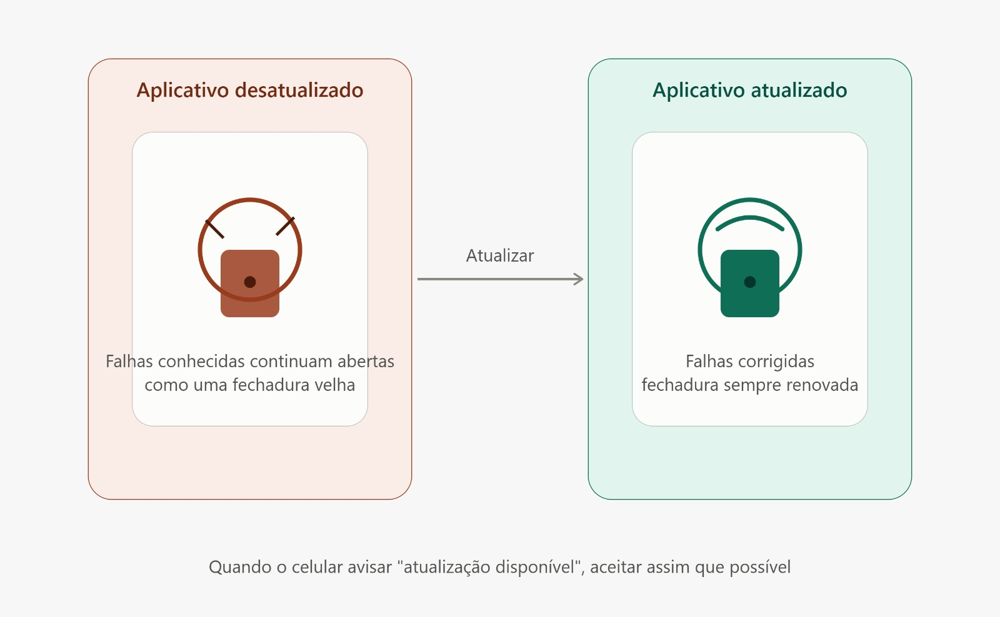

01
Por que atualizar os aplicativos protege contra golpes
As atualizações corrigem falhas de segurança que podem ser usadas para invadir aplicativos e roubar informações. É como trocar uma fechadura antiga por uma nova e mais segura. Por isso, sempre que aparecer um aviso, atualize o aplicativo e evite adiar por muito tempo.
